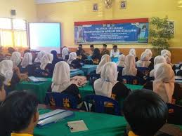

Belajar Lebih Menyenangkan
Belajar lebih menyenangkan karena siswa siswi tidak hanya belajar dengan membaca buku namun juga dengan praktiku dan media dan juga metode yang lebih banyak dan tentnunya menyenangkan
Tanamkan Ahlak dan Iman yang Baik
Menjadikan anak yang cerdas dan juga beriman bisa membuat anak berbuat baik ke sesama dan juga kepada Sang Pencipta
Kegiatan Luar Kelas yang Seru
Ikut kegiatan ekstrakurikuler yang melatih soft skill dan juga menambah pertemanan
fasilitas
Fasilitas yang mendukung dalam proses mencetak insan yang cerdas

VISI DAN MISI
Berikut ini visi dan misi SMKN 2 KURIPAN
VISI
Terciptanya Ekosistem Pendidikan yang menghasilkan Tamatan Berkarakter, Kompeten dan Berjiwa Wirausaha untuk mampu berdaya saing di era globalisas
MISI
1. Meningkatkan mutu pembelajaran yang berorientasi untuk menghasilkan tamatan yang siap pakai di dunia kerja, memiliki jiwa wirausaha untuk mandiri, professional dibidangnya, serta mampu menerapkan nilai-nilai IMTAQ dalam mengikuti perkembangan IPTEK dan globalisasi
2. Melakukan Standar Pelayanan Minimal yang terbaik untuk semua pelanggan
3. Menerapkan sistem manajemen mutu dengan melibatkan seluruh warga sekolah mewujudkan SMKN 2 Kuripan sebagai SMK berstandar nasional;
4. Mengimplementasikan kurikulum 2013 berbasis kompetensi dan menyelenggarakan program diklat secara optimal yang berorientasi pada pencapaian kompetensi berstandar nasional melalui Competency Based Trainning (CBT) dengan pendekatan Production Based Training (PBT), dan Life Skills Education.
5. Meningkatkan kompetensi tenaga Pendidik dan kependidikan melalui pelatihan dan magang industri untuk melahirkan generasi unggul.
6. Mengembangkan fasilitas pendidikan yang mendukung kompetensi peserta didik baik mengadakan sendiri, bantuan pemerintah pusat atau daerah, maupun melalui kerjasama dengan pihak lain (out sourcing).
7. Melaksanakan evaluasi, pengukuran dan sertifikasi dengan menggunakan perangkat, prosedur, serta mekanisme standar nasional dan internasional.
8. Menciptakan lingkungan sekolah yang Bersih, Hijau, Nyaman dan kondusif baik fisik dan psikis warga sekolah dengan kersamaan untuk keberhasilan pembelajaran dan pembinaan siswa.
9. Meningkatkan mutu pembinaan siswa yang berorientasi pencapaian prestasi untuk mampu berinovasi, kreatif dan berkarakter.
10. Mengembangkan dan mengintensifkan hubungan kerjasama dengan Industri untuk mewujudkan sekolah berbasis industri.
11. Mengembangkan dan mengintensifkan hubungan kerjasama masyarakat untuk menciptakan sekolah berbasis masyarakat.
galeri

temukan foto menarik lainnya disini
ada pertanyaan seputar sekolah smkn 2 kuripan ?
tanyakan saja melalui form di bawah ini
Anda Juga Bisa Mengirim Pertanyaan Kepada Kami Melalui Kontak Di Bawah Ini

SMKN 2 KURIPAN
Jl. Tgh. Ibrahim Al-Khalidy, Kuripan Utara, Kec. Kuripan, Kabupaten Lombok Barat, Nusa Tenggara Bar. 83362
Petunjuk